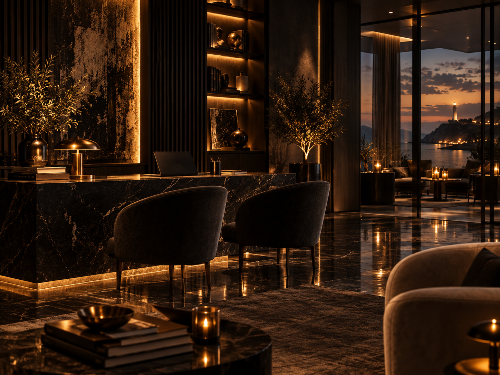

MAISON JF®
O QUE ESTÁS A IGNORAR?
SEGUE O FAROL →
Não sei por onde começar.
VOLTA PARA CASA →
Quero perceber o que se passa comigo.
EXPLORA A MAISON →
Já sei o que procuro.
Casa
Quero voltar a gostar de chegar a casa.
ENTRAR →Corpo
O meu corpo está a pedir que eu pare.
ENTRAR →
Cabeça
Preciso de perceber o que fazer com isto.
ENTRAR →Presença
Não quero passar por isto sozinho.
ENTRAR →Explora a Maison
Já sabes o que procuras?

Profissionais · B2B
O teu cliente sente o espaço antes de comprar.
Aroma, toque e pequenos rituais para criar uma experiência que fica.